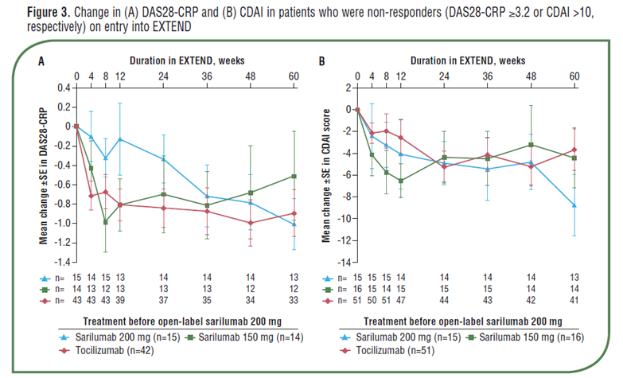

３. KEVはACTよりも効果が高い？

2017年のACRでASCERTIN試験からEXTEND試験に移行した際のデータが発表されています。ASCERTIN 試験でnon-responderであったACT症例にKEV200mgを投与した所、DAS28-CRPやCDAIといった指標で効果が得られています。

Paul Emery, et al. ACR2017. #2468
2017年のACRでASCERTIN試験からEXTEND試験に移行した際のデータが発表されています。ASCERTIN 試験でnon-responderであったACT症例にKEV200mgを投与した所、DAS28-CRPやCDAIといった指標で効果が得られています。
Paul Emery, et al. ACR2017. #2468